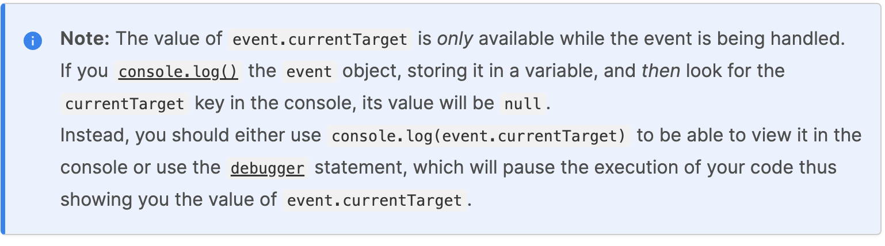

按回退键清空控制台！页面失焦时无效！
事件对象的各种属性值（除了currentTarget等之外）和哪个元素的绑定事件处理函数处理无关，只和事件源元素有关

clientX/Y: 事件触发的位置相对于viewport的位置
pageX/Y: 事件触发的位置相对于html根元素的位置，如果html内容区可滚动，那么滚动会影响此位置
offsetX/Y: 事件触发的位置相对于事件源元素的位置，如果事件源元素内容区可滚动，那么滚动会影响此位置
x/y: clientX/Y的别名
我是大飞！！！